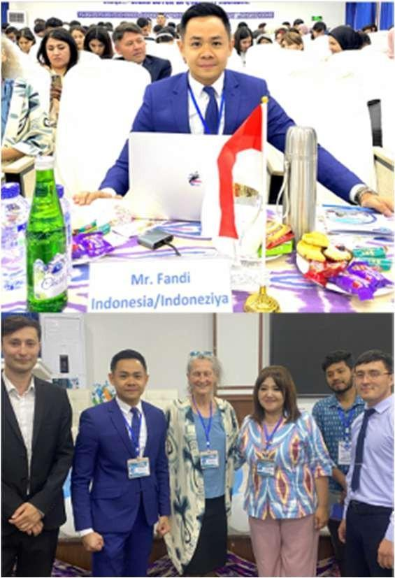

Broadcast
More than a decade of presenting, reporting and producing news across Indonesian television.
View experienceNews anchor · Public speaker · Language educator
I use the disciplines of broadcasting, teaching and public speaking to make ideas clear, human and ready to be shared.
One practice, three settings
Whether the setting is a live newsroom, a classroom or a conference stage, the work begins with the same question: what does this audience need in order to understand?
More than a decade of presenting, reporting and producing news across Indonesian television.
View experienceKeynotes, moderation and practical training designed around presence, structure and audience trust.
View engagementsIndonesian language instruction for international learners in the Philippines, Russia and Uzbekistan.
View teaching work
Featured engagement · Uzbekistan, 2024
At an international conference in Uzbekistan, Fandi presented a multidisciplinary approach that connects language instruction, journalism and public speaking.
“Every audience gives language a new context. The speaker's job is to build the bridge.”See the engagement
Field notes
Loading the latest articles...
Speaking · Training · Collaboration